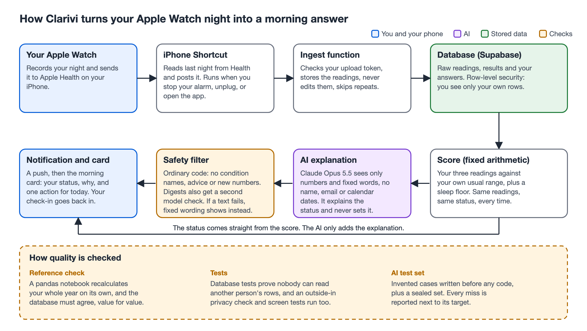

For Apple Watch users who train and sleep with the watch on. It says what last night's readings mean against your own normal, why the day's status was set, and one thing to do today. I built it and tested it on myself, and I report what missed next to what worked.
The Health app shows each number alone. I would wake up to a heart rate variability figure and not know whether it was bad for me or a normal wobble. People who train need the answer before they decide how hard to go, not a chart to read.

Ten targets, set on 29 September 2026, before any result. Week one, 19 to 25 October:
| Measure | Target | Result |
|---|---|---|
| Sync | 6 of 7 days | 4 of 7 |
| Correctness | Match the reference | 0 differ |
| Isolation | No tolerance | Held |
| Signal, my year | 2 in 3 | 2 of 13 |
| Quiet by default | About 1 in 7 | 52 of 231 days |
| Engagement | 5 of 7 days | 3 of 7 |